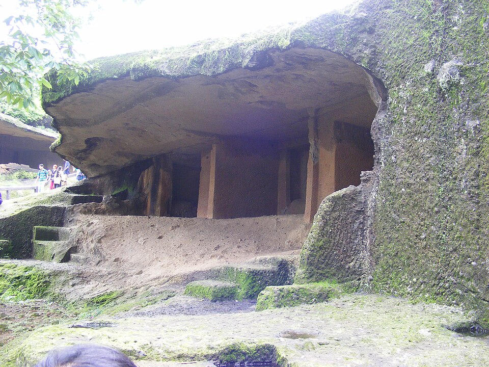

On this page (13 sections)
- The night before the feast
- A note before setting out: dates, hours and doubts
- Part One — The five protected places
- Part Two — Temples, sculptures and sacred hills
- Part Three — Churches and wayside crosses
- Part Four — The hill forts of the hinterland
- Part Five — What has been lost, or cannot be found
- Part Six — The coast’s treasures held elsewhere
- Part Seven — The living year: heritage you can attend
- Part Eight — Tasting heritage
- Part Nine — Three one-day heritage trails
- Part Ten — How to help protect and record these places
- Sources for this chapter
Period covered: what survives, and what can be visited, attended and tasted, as of November 2026
In this chapter. A guide to what survives and can be seen: the protected monuments, temples and churches, hill forts, and what has been lost.

The night before the feast
On the second Saturday of January, as the light goes amber over the Vasai creek, families begin to arrive at the ruined city inside Vasai Fort. They come with pots and bedding, and they settle in for the night among the walls of the Jesuit church the Portuguese called the Holy Name. By morning there will be a Mass in that roofless nave, the feast the people of the coast call Killa cha Sann, “the fort’s festival”, for Saint Gonsalo Garcia, the Bassein-born boy who was crucified at Nagasaki in 1597. On Sunday 11 January 2026 Fr Peter Fernandez led it before hundreds of worshippers. The evening before, as they do every year, the families cooked East Indian moile and stew with meats and vegetables such as kohlrabi (navalkol) in the shadow of the old arches. Their grandparents, the newspaper reported, came by animal cart or by boat [n51 §3; n38 §5; FPJ 11 Jan 2026]. In 2014 the DNA expected “thousands” for the same feast, and noted that the youth of Koliwada had decorated the old church for the prayer meetings [n38 §5; DNA 12 Jan 2014].
That scene is the best way into this chapter. This book has followed the coast of Vasai, Virar and Nallasopara from molten rock to the megacity. Much of what it described is gone: the harbour of Shurparaka, the Shilahara city, the Portuguese “Court of the North”, the creek boats at the Gass landing. But a surprising amount can still be seen, touched, walked, attended and eaten. Some of it is stone: a fort wall, a stupa mound, a row of eleventh-century sculptures along a temple compound. Much more of it is alive: a Mass in a ruin, a fair at a hilltop shrine, a garlanded boat at the Shravan full moon, a bottle of masala ground to a family recipe.
This chapter is a guide to all of it. It is written as a narrative, place by place, but with the practical details a visitor needs: who protects each site, what remains, how to get in, when, and at what cost. It ends with three suggested day trails and a short word on how readers can help protect and record what is left.
A note before setting out: dates, hours and doubts
Three warnings belong at the start.
First, timings and fees disagree everywhere. Travel websites, aggregators and the district’s own pages give different hours, different ferry timetables and different ticket prices for the same place. No official ASI page giving hours or fees for Vasai Fort or Arnala was found in the research for this chapter [n51 §1 Gaps]. Where sources conflict, this chapter gives the range and says so. Treat every time and price here as a starting point, to be checked locally before you travel.
Second, much of the current information is dated. Several of the best visit reports for the Sopara stupa and the Chakreshwar sculptures are from 2013–2019; a report on antiquities lying in a room at Vasai Fort is from 2014 [n51 §1]. Where the newest report is old, the text says how old.
Third, the research notes carry reliability tags, and this chapter keeps their spirit. The strongest sources are the Archaeological Survey of India’s (ASI) list of protected monuments (reproduced on Wikipedia), the Bombay Gazetteer of 1882 and the scholarship of Bhagvanlal Indraji and D. C. Sircar, the museum catalogues of the Chhatrapati Shivaji Maharaj Vastu Sangrahalaya (CSMVS) and the Asiatic Society of Mumbai, and newspaper reports that quote officials (above all the Free Press Journal of 4 June 2026 on the ASI’s works at Vasai Fort). The weakest are travel aggregators, an AI-written encyclopaedia, and blogs on dates that cannot be checked [n51, “Source reliability note”]. When a claim rests on a blog, the chapter says so.
The coast’s seasons matter too. October to March is the best time to walk anywhere here. The monsoon closes beaches, swells the creeks and cancels events: in 2025 heavy rain cut the three-day Vasai Vijayotsav to a single day [n51 §5; FPJ May 2025]. And the sea at Arnala and Rajodi is dangerous for bathing in any season, as the drowning reports of 2016 and March 2026 make painfully clear [n45 §5].
Part One — The five protected places
The list
In the ASI’s Mumbai Circle list of Monuments of National Importance, five entries fall within the old island-and-creek world of this book. Copied faithfully, with the ASI’s own odd spellings, they are:
- N-MH-M13 — Arnala Fort, at Arnala.
- N-MH-M14 — “Fort and Portuguese remains, Bassein Fort also known as Vasai Fort”, at Bassein.
- N-MH-M15 — “Tank by the west side of the road from Umarale village to Bolinj”, at Bolinj.
- N-MH-M16 — “Mound locally known as ‘Sonar Bhat’”, in Survey No. 52, Hissa No. 11, about 25¼ gunthas, at “Gas” (the ASI’s spelling of Gass).
- N-MH-18 — “Mound locally known as Burud Raja cha Kot (Nallasopara)”, at Mardes. The list prints this one without the “M” that the others carry; it is the Sopara stupa [n51 §1A; Wikipedia, List of monuments of national importance in Mumbai circle].
Three more Palghar-district monuments follow in the same list but lie outside this book’s area: the Bahrot caves at Khunavada (M17), the Ganapati Gadad Brahmanical caves at Polu Sonala (19) and carved stones at Vada (M20). A parliamentary annexure says Palghar has eight centrally protected monuments, which matches M13 to M20 [n51 §1A]. The list read for this chapter gave no notification dates, except that Arnala, on other evidence, was declared a protected monument on 26 May 1909 [n51 §1A; n45 §4]. The ASI’s own full list (its “CPM List” PDF) exists but was not opened in the research, so the notification dates of the others remain a gap [n51 §1 Gaps]. One fort-reference wiki calls Vasai Fort “Monument #110, Mumbai Circle”; that conflicts with N-MH-M14 and is best treated as an old serial number or an error [n51 §1A].
No Vasai, Virar or Nallasopara site was found on the Maharashtra state-protected list, though that list was not read in full for Palghar [n51 §1A].
It is worth pausing on what this list means. Of the five, only Vasai Fort has real visitor infrastructure and an active ASI works programme. Arnala is reached by boat and has no staffed gate. The stupa, the Gass mound and the Bolinj tank are low-key protected mounds and a tank, with little or no interpretation on site [n51 §1, Takeaway and Inferences]. A visitor should go to the first two expecting a monument, and to the last three expecting a place: a patch of ground whose meaning you must carry in with you.
Vasai Fort (N-MH-M14): a city inside a wall
What it is. Vasai Fort, at Killa Bandar in Vasai West, is not a castle but a walled city, the Portuguese “Baçaim” whose rise and siege fill Chapters 8 and 8. Its oldest dated stone reads, in Portuguese: “The first Captain who built this fortress was Garcia de Sá, by command of the Governor Nuno da Cunha, in the year 1536” [n32 §1; da Cunha p.217; Gazetteer 1882 p.39]. Two centuries later, after a siege that began in March 1739, the Portuguese surrendered to the Maratha army of Chimaji Appa on 16 May 1739 [n51 §1B; n10 §1.8].
How big. The ASI today describes about 109 acres within a perimeter of about 3,300 metres, with seven churches, a citadel (the Balle Killa) and other structures [n51 §1B; FPJ 4 Jun 2026, quoting the ASI]. The Gazetteer of 1882, walking the same ground, counted a wall about a mile and a half round, an irregular ten-sided figure with ten four-sided bastions, two double gateways and a postern [n32 §1; Gazetteer 1882 p.38]. A footnote names the bastions: Nossa Senhora dos Remédios, Reis Magos, São Tiago, São Gonçalo, Madre de Deus, São João, “Elephante”, São Pedro, São Paulo and São Sebastião [n32 §1]. The same Gazetteer elsewhere says “eleven”, and the Palghar district website today says “4.5 km wall, 11 bastions”, which conflicts with both the ASI’s perimeter and the Gazetteer’s count [n32 §1; n51 §1B]. The safest summary is the Gazetteer’s: ten bastions, two gates and a postern, with “eleven” noted as a variant.
The two gates. You can still enter as the Portuguese did, by sea or by land. The Sea Gate (Porta do Mar) had, in 1882, massive teak doors cased in iron bars and spikes, and on one door, half hidden by an iron bar, the date “20th November 1720” [n32 §1; Gazetteer pp.38–39; da Cunha pp.213–214]. The Land Gate (Porta do Campo) already had broken woodwork in 1882 [n32 §1]. Whether the 1720 doors survive today is not confirmed; a DNA headline, never opened in full, reports that a stolen gate was dumped in a godown [n51 §1B]. In June 2026 the ASI said new wooden gates “are being installed” at the sea and land entrances, with a mild-steel sliding gate planned at the main entrance [n51 §1B; FPJ 4 Jun 2026]. If you see new timber in the old arches, that is why.
The tunnel that has never been explored. Visitors are often told of a secret tunnel under the São Sebastião bastion, with one blog giving it a date (1554) and a length (530 ft). The only primary mention is the Gazetteer’s: “Inside of the wall a passage is said to run to the river. But the air is bad and puts out lights, and the passage has never been explored” [n32 §3; Gazetteer p.43]. The length and date are retellings; the tunnel itself is unverified.
A walk through the ruins. The Gazetteer’s 1882 walk, from the sea gate to the land gate, still makes the best route, so long as you remember that it describes the fort as it was 144 years ago [n32 §2].
Just inside the Sea Gate, on the left, stands a small Hanuman temple. The Portuguese scholar da Cunha, writing in 1876, called it of “mean architecture” and read it as a Maratha memento: “the monkey-god has kept his ascendancy” [n32 §2; da Cunha p.214]. Local lore today dates the consecration of this Veer Hanuman to 27 July 1739, and notes that the idol has a carved moustache; a newer Hanuman temple with a lamp tower stands at the Bhui Darwaza, and a Shri Nageshwar shrine beside the old Nagesh Mahatirtha pond is said to have been destroyed under the Portuguese and rebuilt after the Maratha conquest [n10 §1.8; durgbharari.in, a Marathi fort site]. These dates and stories are tradition, from a single Marathi site; the current state of the fort’s temples was not checked for this chapter [n51 §1B].
Beyond lies the great Matriz, the cathedral of St Joseph. Its lintel inscription, in Portuguese, records that it was rebuilt in 1601 under Archbishop Aleixo de Menezes, with Pedro Galvão Pereira as vicar. A black Latin tombstone to the right of the main altar held the bones of that same Pedro Galvão, “who managed and enlarged this temple”; he died at Goa on 19 March 1618. In 1876 da Cunha tried to climb the cathedral’s tower stair and two steps crumbled under him [n32 §2; Gazetteer pp.38–39; da Cunha pp.214–216]. In 1987 The Examiner of Bombay noted that the belfries still had their spiral stone stairs halfway up, but their tops had fallen and the bells were gone [n09 §1]. Where those bells went is one of the strangest stories in this chapter, and it is told below.
Near the citadel was a portal with Corinthian capitals, a Maltese cross, a coat of arms, a sphere, the date 1606 and an “I.H.S.” niche. Its fluted shafts had already been carried off by 1876 to adorn a village church; which church, the sources do not say [n32 §2 and §4; da Cunha pp.216–217]. The ruined bastion near the citadel carried the 1536 Garcia de Sá stone; da Cunha found it with the help of the resident lessee, J. H. Littlewood [n32 §1].
Then come the religious houses, each a ruin with its own story:
- The Misericórdia, a long, massive church and hospital on the river-side wall, with a cloistered courtyard and a finely hewn front bearing a Maltese cross and dragons on its escutcheon. The traveller Gemelli Careri heard Mass here in 1695 and called it “the parish of the city”. Parallel to it, in 1882, stood a modern temple of Mahadev [n32 §2; Gazetteer p.40].
- Nossa Senhora da Vida, “one of the oldest churches in Bassein”, which the British turned into a sugar refinery in 1852. When the factory’s foundations were dug, workmen found the bones of a man and a horse with a rusty rapier: a general, da Cunha thought, buried with his charger [n32 §2].
- The Jesuit church and college, which had “the handsomest façade in Bassein”: a noble arch, fluted columns, Corinthian capitals, the IHS monogram, and the date 1636 over the college door. Its foundation was laid in 1548. In 1588, the Gazetteer records, 9,400 Hindus were baptised in Bassein; Fryer in 1675 admired the college library [n32 §2]. This is the church the ASI today calls the “St Gonsalo Garcia church” and the faithful call the Holy Name, the setting of Killa cha Sann [n51 §1B].
- The Franciscan church of Santo António, the oldest and one of the largest, with an arched chief chapel, elaborate mouldings, a great flat arch near the baptismal chapel in the style of Belém near Lisbon, four side chapels and cloisters. Francis Xavier stayed here on his visits in 1544 and 1548. Tombstones in 1882 included one of a Councillor of His Majesty who died on 24 August 1558 [n32 §2].
- The Dominican church of São Gonçalo (1583): walls, tower and chief chapel with its arch still standing in 1882, and the patron’s ruined tomb on the gospel side [n32 §2].
- The Augustinian chapel of Nossa Senhora da Anunciada, with a double-arched front and a vaulted roof with painted mouldings. Nearby, in the nobles’ quarter, was an “ornamental bath-room of hard cement studded with shells and porcelain”, and near the São Sebastião bastion lay a modern English tomb, of Mrs Durham, wife of the surgeon Andrew Durham [n32 §2].
How many churches stood here depends on whom you ask. The Gazetteer counts six churches and other religious buildings; Heber in 1825 said seven; Mrs Postans in 1838 said eight [n32 §2]. The ASI today says seven, and a parish blog lists them as five run by the Franciscans, Dominicans, Augustinians, Jesuits and Knights Hospitaller, and two by the secular clergy [n51 §1B; n09 §1]. The three best preserved today are the Franciscan church, the Jesuit Holy Name, and the towers of the Dominican church and the Matriz [n51 §1B]. One architectural guide notes that three chapel façades are recognisable and that the southernmost has a barrel-vaulted ceiling [n51 §1B; TIFR Bombay architecture page].
Inscriptions to look for, if they are still there. Visitors with a taste for stone should look for three things. The first is the 1536 Garcia de Sá stone on a ruined bastion near the citadel. The second is the São Sebastião bastion stone, dated 22 February 1554, naming King João III, Viceroy Afonso de Noronha and Captain Francisco de Sá. It marks the bastion through which the Marathas broke in, in 1739, and it was lying neglected near the land gateway in 1882. The third is the 1720 date on the Sea Gate doors [n32 §1; n51 §1B]. Whether any of the three is still in place, or in an ASI store, is not confirmed. In 2014 the DNA found stone tablets, pottery, bones and Portuguese-era objects piled in an unguarded room inside the fort [n51 §1B; DNA 5 Nov 2014]. That report is now twelve years old.
Why it fell into ruin. The ruins are not only the work of war. In 1860 the fort’s interior was leased for thirty years to Major Littlewood, whose widow held the lease after him while her son farmed the fields inside the walls. In January 1882 the Collector, W. B. Mulock, wrote that this made “the proper preservation of the ruins almost impossible” [n32 §4; Gazetteer pp.37–38]. The sugar factory in N. S. da Vida ran from 1852 until about 1874 [n32 §2]. Palms grew up everywhere, and to this day a blogger can write of toddy tapping in the fort’s “crown of palms” [n13; Mumbai Paused 2022].
The ASI’s works of 2026
The most hopeful news about the fort in years came in June 2026. Replying to a complaint that a Mumbai resident had lodged on the Prime Minister’s grievance portal, the ASI’s Mumbai Circle set out what it had done and what it planned [n51 §1B; FPJ 4 Jun 2026].
Completed, it said, at the Franciscan church, the St Gonsalo Garcia (Jesuit) church and the Balle Killa: removal of vegetation, stone flooring and aprons, pointing, waterproofing, debris clearance and grill fencing.
Ongoing, at the Misericórdia: vegetation removal and wall repair.
Planned: conservation of the ruins of the churches of “St Baptist” (St John the Baptist), St Dominic and St Augustine, together with visitor amenities, fencing and new gates [n51 §1B; n32 §4].
The reply gave no timeline, no budget and no visiting hours. One online encyclopaedia generated by AI dates the Gonsalo Garcia church work to 2020–22 and the Franciscan to 2023–24, but that source is not reliable enough to cite as fact [n51 §1B]. The research notes judge the plan fairly: this is the language of a reply to a complaint, not a funded programme with dates. A visitor in late 2026 or 2027 should expect scaffolding and closed bays in parts of the fort, and should be glad of them [n51 §1, Inferences].
Two further pieces of recent news belong here. A DNA report, seen only as a headline and snippet, says that excavation at the Balle Killa found a “secret room”, artefacts, and several wells that once supplied the citadel’s water [n32 §3; n51 §1M]. And the ASI enforces its rules: in 2025–26 the Palghar police booked a production company for lighting a stove inside the fort, against ASI rules. Anyone planning a shoot, even a small one, needs permission [n51 §1B; FPJ]. The fort has been a film location for years; it appears, by the accounts of fan and travel sites, in Coldplay’s video for “Hymn for the Weekend” [n45 §5].
The Maratha memorial
Outside the walls, the Maratha side of the story has its own monument: the Narveer Chimaji Appa Smarak, a statue and garden near the fort. On Vasai Vijayotsav each May, the floral tributes are laid here [n51 §1B; n18 (A)]. A plaque on the fort’s northern wall commemorating 1739 is said to be visible; that claim comes only from a search-result summary [n51 §1B].
Visiting Vasai Fort: the practical facts
Getting there. Take the Western Railway to Vasai Road station, then an auto or bus to Killa Bandar, the fishing village at the fort jetty. “Killa Bunder” is the destination on buses, though that detail rests on a single unverified listing [n51 §1B and §5].
Protection. The fort is a centrally protected monument under the Ancient Monuments and Archaeological Sites and Remains Act of 1958, as the ASI itself reminded readers in June 2026 [n51 §1B].
Hours and fees: a conflict. Listings variously give 6 am–6 pm, 9 am–6 pm, and 10 am–5.30 pm. Most say entry is free; others say Rs 10, or Rs 25 for Indians and Rs 300 for foreigners. The ASI gave no hours in its June 2026 reply [n51 §1B]. Assume daylight hours, carry small change in case a ticket is charged, and check on arrival.
Facilities. One recent guide says there is no security, drinking water, washrooms or food inside the walls [n51 §1B]. Bring water, a hat and sensible shoes; the fort is large and much of it is uneven ground.
Sundays. The ASI allows local Catholics a religious service in the fort every Sunday [n51 §3]. If you arrive on a Sunday morning, be quiet near the Holy Name.
Guided walks. Several have run over the years, though none could be confirmed as current: INTACH walks (reported in 2019), a Rs 600 heritage walk by Pascal Lopes (listed in 2019, since expired), and private three-hour tours from about USD 50 [n51 §1B]. Ask locally for whoever leads walks now.
Time needed. About three hours for the main ruins, by the research notes’ estimate [n51 §5].
Arnala Fort (N-MH-M13): three forts on one island
Nine kilometres or so from Virar station, at the mouth of the Vaitarna, a low island carries a fort that is really three forts in one [n51 §1C; n45 §4].
The layers. The Gazetteer says that about 1530 the Portuguese found on the island a strong fort in the hands of the Gujarat Sultans, with “domes and Saracenic arches”. That is the evidence for a fort before the Portuguese. The popular date of 1516 and the builder Mahmud Begada rest on Wikipedia and one Marathi website, without a cited primary source [n45 §4; Gazetteer p.10]. The Portuguese captain of Bassein then gave the island to a nobleman who began a fort about 700 ft square but never finished it; the Portuguese called the island Ilha de Vaccas, “Cows’ Island” [n45 §4]. On 28 March 1737, in the campaign that ended at Bassein two years later, the Marathas surprised the Portuguese, who abandoned the island, and Bajirao I ordered a new fort [n45 §4]. An inscription over the north gate, read by the Gazetteer, records the rebuilding in 1737 (Shak 1659) under Bajirao I, by the architect Baji Tulaji. A Marathi fort site gives the completion date as 23 May 1737; that exact day rests on that one site [n45 §4]. The walls a visitor sees today are mostly that Maratha fort of 1737.
What to see. Three gates, the main one facing north with carvings of elephants and flowers. Inside: the Trimbakeshwar Mahadev temple with an octagonal tank; a Bhavani temple; padukas of “Nityananda”; a recent Datta temple; and a dargah with two tombs, of the saints Shah Ali and Hajji Ali. Outside the main gate stands a Kalika Mata temple, with a hero stone and a cannon [n45 §4; n51 §1C]. The Gazetteer already knew these: in 1882 Trimbakeshwar received a government grant of Rs 45 a year, Bhavani Rs 91, and the tomb of “Shahali and Hajiali” an endowment of Rs 80, beside “a stone-lined eight-cornered pond and many wells” [n49 §2c; Gazetteer pp.10–11]. A Hindu temple, a goddess shrine and a Muslim saints’ tomb sharing one island fort, each with its own grant, is one of the quiet lessons of this coast.
About 550 metres south of the main fort stands a lone Portuguese tower of the Martello type, with no entrance gate. One listing dates a tower to 1803, which conflicts with a Portuguese origin and is unresolved [n45 §4; n51 §1C]. The bastion count conflicts too: a Marathi site lists ten (nine round and one square, with names such as Yashwant, Bhavani, Ganesh and Vetal), while English Wikipedia says only one of ten still stands [n45 §4]. The district website says there is no food on the fort, but there is a well [n51 §1C].
Getting across. A boat from the Arnala beach jetty takes five to ten minutes. Here the sources part company entirely. One guide says boats run about every fifteen minutes from 6 am to 6.15 pm; a Marathi site gives 6 am–12.30 pm and 4–7 pm; the Incredible India listing says 6 am–6 pm. Fares reported range from Rs 10 to Rs 50 one way. One guide says there is no staffed gate and no posted hours on the island, so the ferry sets your window; another source says there is no jetty on the island and passengers walk ashore [n51 §1C; n45 §4]. The practical advice is simple: carry cash, ask the boatmen when the last boat returns, and watch the tide.
A warning about the sea. The Arnala–Rajodi shore is the most dangerous stretch on this coast. Four teenagers on a picnic were pulled into the sea at Rajodi in August 2016; on 19 March 2026 two sixteen-year-old boys playing football at Arnala drowned. Locals blame sand mining for the depressions; the Arnala sarpanch says picnickers ignore warnings; the coastal police have at times banned entry into the sea until the end of September [n45 §5]. Admire the water from the boat and the ramparts. Do not swim.
In Arnala village. St Peter’s Church, of the early twentieth century, was blessed in 1931 [n51 §1C]. Around the fort live three to four thousand Koli people, by a Marathi site’s estimate; the 2011 census counted 15,331 in Arnala and 2,566 in Arnala Killa [n45 §4]. A Free Press Journal headline, never read in full, says Arnala is held holy because three rivers meet there, that ashes are immersed here, and that a Mahatma Gandhi memorial was built on 2 October 1956; this could not be confirmed [n45 §4].
The Sopara stupa (N-MH-18): Burud Rajacha Kot
West of Nallasopara station, in the village the ASI writes as Mardes (Merdes), a grassy brick mound rises among houses. Locals long called it Burud Rajacha Kot, “the fort of the Burud king”, and assumed a palace lay underneath. In April 1882 Bhagvanlal Indraji dug into it and found instead a brick chamber with a stone coffer at its heart: a Buddhist stupa [n02 §1; n18 (A)]. (Some sources give February for the dig; April is the more usual month [n02 §1].)
What lay inside the coffer is told in Chapter 5 and below, where the objects now sit in Mumbai. What stands at Mardes is the mound. Its history, as scholars reconstruct it, runs from a first building in the Mauryan period, through enlargement between the first century BCE and the third century CE, to a further expansion in Rashtrakuta times [n02 §1; LiveHistoryIndia]. The ASI’s Mumbai Circle list puts it about half a kilometre west of Sopara town on 2.00 acres [n51 §1D].
What you will see. The fullest visit report is a cyclist’s, from December 2013. He found a mound about 65 yards round and about 17 ft high, with steps on the east side, a small Buddha figure in an altar niche, a newer Buddha statue outside and a pillar capital nearby. A “rickety” board gave the history and claimed an age of 2,500 years, while the archaeologist Prof. Kurush Dalal dated the visible votive stupa to about the eighth century CE [n51 §1D; Bijoor 2013]. Both can be true: the core is Mauryan, the visible skin much later. In 1939–40 the ASI’s M. M. Qureshi re-excavated and found stone lintels, two small stupas on the south side and glazed sherds of the Muslim period [n02 §1].
Condition: a dated and worrying record. In March 2014 the DNA found no guards, and drunks and drug users on the site, with a Rs 10 crore plan by the regional development authority “only on paper” [n51 §1D]. The same year the state named the stupa the hub of Maharashtra’s Buddhist circuit, and Buddhistdoor reported that it still lay largely neglected; a nine-foot Buddha statue donated by a Pune trust was installed about 200 metres away [n02 §1]. Outlook Traveller called it a candidate for “India’s least visited tourist sight” [n02 §1]. A 2023 forensic study analysed the stupa’s bricks and mortar [n51 §1D]. No 2025–26 visit report was found, so the stupa’s present state is unknown, and there is no site museum [n51 §1D]. Go in daylight, ideally with a companion, and expect little interpretation.
Why go anyway. Because this is the oldest standing monument of the whole coast, and because, with the Chakreshwar sculptures twenty minutes’ walk away, it lets you stand in the middle of ancient Shurparaka.
The “Sonar Bhat” mound at Gass (N-MH-M16)
The fourth protected monument lies in Gass, the garden village on the south edge of old Sopara, a mile or so south of Sopara village by the Gazetteer’s measure [n42 §1]. The ASI protects a “mound locally known as ‘Sonar Bhat’” in Survey No. 52, Hissa No. 11, about 25¼ gunthas [n51 §1L].
In 1882 the Gazetteer described the Sonarbhat field and its surroundings. There was a mound with a broken cross-legged female figure, perhaps the Jain goddess Ambika, and the foundations of a temple “said to have been dedicated to Parasnath”. Nearby were a damaged stone, perhaps the Sun with a lotus in each hand, “probably of the eleventh or twelfth century”, and the well from which the great bull now at Chakreshwar was dug. The six-foot Brahma at Chakreshwar was found buried in a Sonarbhat field about 1850 [n42 §2; n10 §1.3; Gazetteer pp.337–341]. Around Gass lake, at a spot called Mala, lay the foundations of “probably a Brahmanic temple of the eleventh or twelfth century”, a richly carved stone lotus-pendant on the east shore, dressed stone steps at the south end, and the tomb of the Muslim saint Shaikh Akbar-moi-ud-din in a garden, bordered with old bricks [n42 §2].
Today no current visit report for the mound was found. A modern scholarly paper notes, for the Taki Pada part of Gass, lintels of a Jain temple, a Vishnu with the Dashavatara, hero stones and debris from the water tank, and “a temple plinth where a slum stands now” [n42 §2; Shah 2020]. A stone anchor found in 2018 near Gass and Taki Pada, close to a “Bandar Masjid” (bandar, port), is read as marking where an early port stood before silting filled it [n42 §1; Shah 2020].
For readers from Gass, as the author of this book is, the mound is worth finding precisely because it is so easy to miss. Ask in the village for Survey No. 52 and for “Sonar Bhat”; older residents may know the field by that name. Expect a protected patch of ground, not a monument. Chapter 26 tells the village’s whole story.
The Bolinj tank (N-MH-M15)
The fifth protected place is a “tank by the west side of the road from Umarale village to Bolinj” [n51 §1A]. That is all the record gives. No description and no visit report were found [n51 §1M]. It sits in the Kupari and Samvedi garden belt of Bolinj, where the Gazetteer in 1882 found the headman Bhiku Patil living in a house with a fifteenth-century stone [n49 §1a]. A visitor can see it from the road; what the ASI found worth protecting, and when, is a question for its own files.
Part Two — Temples, sculptures and sacred hills
Most of what people actually visit as “heritage” on this coast is living worship: temples and churches built or rebuilt after 1739, still full of people [n51 §1, Takeaway]. Almost every Hindu shrine here tells a version of one story: a Puranic landscape of Parashurama; temples destroyed by the Portuguese after 1534; and rebuilding after the Maratha conquest of 1739, much of it under one man, Shankarji Keshav Phadke, the Maratha Sarsubhedar of Bassein, with Peshwa and later British grants [n10, Takeaway]. Modern telling often says “Chimaji Appa built it”. The Gazetteer credits Shankarji Keshav with Nirmal, Tungareshwar, Agashi’s temples and Vajreshwari [n10, Inferences]. Remember his name as you go.
Chakreshwar: a museum without walls
About 550 yards north-east of the stupa, on the west bank of the Chakreshwar lake in Joshiwadi, Nallasopara West, on the Bolinj–Sopara road, stands a temple whose compound is one of the most remarkable open-air sculpture collections in the Mumbai region [n10 §1.3; n51 §1E]. One visitor put the walk from the stupa at about twenty minutes [n51 §1E].
The temple itself is not old. The Gazetteer already called it the “mean modern temple of Chakreshvar” in 1882, and it has been rebuilt since [n10 §1.3]. Around it today are a Ram temple under a tarpaulin roof, a Hanuman shrine and the Akkalkot Swami Math, with the samadhi of Swami Mayuranand; Swami Samarth is believed to have stayed here [n51 §1E; n10 §1.3]. A jogging track now rings the lake [n10 §1.3].
What you come for is the row of old stones along the compound wall. The Gazetteer described the chief ones in 1882, and visitors in 2013 and 2019 found them still there [n10 §1.3; n51 §1E]:
- A three-faced, bearded Brahma with four arms, 6 ft 4 in tall in 1882, holding ladle, rosary, Veda and oil flask, with his swan: “probably carved in the eleventh or twelfth century”, found about 1850 buried in a Sonarbhat field at Gass, and in 1882 “still worshipped as Dattatraya” [n10 §1.3].
- A Surya on seven horses, of the eleventh century.
- A headless bull with a carved chain-and-bell necklace, dug from a well in Sonarbhat, “probably of about the same age (A.D. 1060) as the Ambarnath temple” [n10 §1.3]. Today’s visitors see a large Nandi.
- Uma-Maheshwara (Shiva and Parvati) with Ganpati and Kartikeya.
- A slab with Shitala Devi and a small Jain Chandraprabha, the eighth Tirthankara.
- Hero stones and a sati stone.
- In later reports: Ganesha, Harihara, Gajalakshmi, Agni on a ram, Mahishasuramardini, a Jain Ambika, an ek-mukhi linga, a standing yogini with a parrot, and Kali and Varaha in the verandah [n51 §1E].
In 1882 a six-inch naked Parshvanath with a five-hooded snake, “probably of the tenth century or earlier”, sat in a hollow of the great banyan, 48 ft round [n10 §1.3]. Whether it is still there was not reported.
The stories told about the stones are tradition. One says the Portuguese threw the idols into the lake and they were later recovered; another, that people hid them to save them. Hindu belief says Krishna’s discus dug the tank; Jain belief links it with Chakreshvari, the guardian goddess of Adinath [n10 §1.3]. Both Hindu and Jain sculptures were in fact recovered here, so both memories have something to stand on.
Protection and condition. No ASI or state listing was found. The sculptures stand in the open in the temple trust’s care. Reports conflict: “neat and clean” in 2016, “dilapidated” in 2019. The temple was reportedly burgled once, and relics were later recovered from the lake [n51 §1E]. No visiting hours were found; temples here generally open from dawn to evening, but that is the research notes’ inference, not a posted time [n51 §1E]. Be respectful: this is a working temple, and some of these stones are still worshipped.
Nirmal: the Peshwa-era temple town
Nirmal, about six miles north of Vasai in Nallasopara West, was in 1882 “one of the most sacred places in the district, having a much venerated ling, and being, according to tradition, the burying place of one of the great Shankaracharyas” [n10 §1.1; Gazetteer pp.292–293].
The legend. The Nirmal Mahatmya tells of the demon Vimal, who harassed Brahmans near the Vaitarna. Parashurama could not kill him, because Shiva kept restoring his limbs, and won only with Shiva’s help; at the spot he set up a linga called Vimaleshvar, “and from Vimal it came to be called Nirmal, or stainless”. The Gazetteer also offers a Dravidian derivation, nir (water) and mal (hill): “a wooded mound rising from bare flats once under water” [n10 §1.1]. Modern versions add that Parashurama’s arrows made the twin lakes [n10 §1.1].
The history. “The Portuguese had pulled down the temples and destroyed the ling. On the fall of Bassein (1739) Nirmal was purified, prints of the feet of Shri Dattatraya took the place of the ling, and a reservoir was built.” Eight temples were built about 1750 by Shankarji Keshav: to the Shankaracharya Swami, Mahavishnu, Vimaleshvar Mahadev, Bhuteshvar, Ganpati, Durga, Hanuman and Siddheshvar. The Gazetteer suspected that stones the Portuguese had built into churches were reused to raise the temples of the older gods [n10 §1.1; Gazetteer pp.292–293].
Which Shankaracharya? No one can say with confidence. The Gazetteer says “one of the great Shankaracharyas” by tradition, or perhaps a religious descendant. A heritage blog names Swami Vidyaranya, “5th Shankaracharya of Puri”, dying here in “404 BC”, which is implausible; others suggest a later Shankaracharya from Gujarat or Dwarka [n10 §1.1; n51 §1F]. Treat all names and dates as tradition.
What you see today. From outside the complex looks like a small fortress, with a deepstambh (lamp tower) at the gate, a Peshwa-style plinth, heavy timber inside and out, and a courtyard like a haveli. There are shrines to Vishnu with Rukmini and Satyabhama; to Shiva, whose sanctum holds the samadhi; to Ganesh, Brahma and Kartikeya (women may see Kartikeya only on Kartik Purnima); to Ram; a rare group of Parashurama with Jamadagni and Renuka; Dattatreya with Atri and Anasuya; and Kamadeva. The ceiling carries the twelve signs of the zodiac and the nine planets. The caretakers are the Pandya family, Gujarati Brahmins [n10 §1.1; Heritage Chronicles 2019]. One writer calls it “a modern reconstruction” [n10 §1.1]. By the lake, the small Surleshwar Mahadev and its Surleshwari shrine, where wooden figures are offered when a wish is granted, keep a deepstambh, padukas, a disciple’s samadhi, broken sculptures including a three-faced bearded figure like the Chakreshwar Brahma, and a “cow and calf” land-grant stele [n10 §1.2].
Look too for what the Gazetteer saw about 500 yards north of the chief temple: a dressed stone with letters “which seem part of a Sanskrit inscription of the seventh century” [n10 §1.1]. Whether it survives is not known.
Nirmal is also a Christian place. Its Holy Cross church (the Gazetteer’s “Santa Cruz”) is one of the oldest parishes of the coast, founded in the 1550s; the present building dates from 1856, when it cost Rs 24,000, and in 1882 it served 2,184 Christians [n10 §1.1; n09 §2]. Its feast is on 14 September [n51 §3]. To stand between the samadhi temple and the Holy Cross church is to stand in the middle of the coast’s whole religious history.
No protection, ASI or state, was found for Nirmal [n51 §1F].
Jivdani: the goddess on the hill
East of Virar station rises Jivdhan hill, crowned by the temple of Jivdani Devi, the goddess of Virar. In 1882 the Gazetteer saw no temple here. It saw, “about a mile east of the Virar station”, ruined fortifications on the summit and “some very old-looking caves and cisterns said to be the work of the Pandavs”. Barren women in particular came in the fair season to make offerings to “an invisible deity, who is believed to have fled from a niche in one of the caves at the touch of a Mhar”; they threw betel nuts into a hole in the niche [n10 §1.6; n49 §2c].
Today’s legend keeps the cave and the herdsman: during their exile the Pandavas worshipped the goddess here, and a Mahar cowherd who followed a cow to the summit met her. The original sanctum, Wikipedia notes, is still “the hole in the niche of the cave”, and the present idol is very recent [n10 §1.6; n49 §2c]. The district website says the temple is about 150 years old; popular websites claim more than 1,500 years [n10 §1.6]. One writer says the cave was originally one of a set of Buddhist caves, and that neighbouring caves are now encroached by shops and shoe stands; no scholarly confirmation of the Buddhist origin was found [n10 §1.6].
Getting up. There are two ways. On foot, by about 1,375 steps (district website) or 1,465 (Wikipedia); the hill is about 728 ft high, by the more reliable count, not the 1,500 ft sometimes claimed [n10 §1.6]. Or by the funicular ropeway the Shree Jivdani Devi Sansthan built at its own cost, about Rs 35 crore, expected in January 2021 and challenged before the National Green Tribunal [n10 §1.6]. A single blog gives the return fare as about Rs 250; ropeway hours are given as 5 am–7.30 pm or 8 am–6 pm; temple hours as from 4 or 5 am to 7.30 or 8 pm [n51 §1H]. Check before you go. Sundays are crowded, and Navratri brings the biggest crowds of the year, with a fair on Dussehra [n10 §1.6]. Warli Adivasi families live on the hill [n10 §1.6].
No ASI or state protection was found for the hill or its caves [n51 §1H].
Tungareshwar: the forest temple
On Tungar hill in Vasai East, inside the Tungareshwar Wildlife Sanctuary (notified 2003), stands a Shiva temple at about 2,177 ft, three or four kilometres from the sanctuary gate [n10 §1.4; n51 §1G].
The Tungar Mahatmya tells how the demon Vimal, driven into the sea by Parashurama, settled on Tungar, won Shiva’s favour by penance, and “had his hill honoured by a holy pool and a lingam”. The Gazetteer wondered whether Tungar was Ptolemy’s “Dunga” [n10 §1.4]. In 1882 the temple was reached from Satavli through the Warli hamlet of Dhondvira. It was “a group of four square buildings… said to be of great age”, rebuilt about 1750 by Shankarji Keshav, with a domed shrine about ten feet square, a four-armed Shiva and Ganpati at the door, a carved Parvati, a Kaliyamardan Krishna, Dattatreya’s footprints under the Nandi canopy, and a Hanuman shrine. The Peshwa had granted it a plot about three miles square, and the British continued the grant. Stones carved with the sun, the moon and human figures lay in a stream bed [n10 §1.4]. On the summit were unfinished Jain cells “supposed to have been cut about… 1234”, the “Pandav springs”; the British tried and failed to make the hill a hill-station between 1865 and 1880 [n10 §1.4].
Today the complex includes Kal Bhairav, Jagmata and Khodiyar Mata temples, a Ram Kund and the Balyogi Sadanand Maharaj Math [n10 §1.4]. The ashram dates from 1977, before the sanctuary; in 2019 the Supreme Court ordered its illegal parts demolished, but on review spared the temple, the samadhis and three rooms [n10 §1.5]. The temple is open from about 5 or 6 am to 6 pm, without charge; the sanctuary from 6 or 7 am to 6 pm, with conflicting reports on the fee (none since 2016, says one site; Rs 25–30, say others) [n51 §1G]. Start early, carry water, and remember this is a forest with wildlife. Thousands trek up on Mahashivratri, and a bhandara (communal meal) is held then and on the Mondays of Shravan [n51 §3].
The temple is protected as part of a sanctuary, not as an ASI monument [n51 §1G].
Agashi: the old port town of the Virar side
Agashi, in Virar West, was in 1881 a town of 6,823 people (5,168 Hindus, 1,500 Christians, 155 Muslims), trading in plantains and betel leaf and famous for “the best dried plantains in the district” [n49 §2a]. Its old lanes still hold one of the densest clusters of temples on the coast.
The Bhavani Shankar temple and its tank are the heart of it. The Gazetteer says the temple was built in 1691 (Shak 1613) by Shankarji Keshav Phadke, with a holy bathing place beside it “supposed to cure skin diseases”. The date sits badly with the patron, who was a Maratha officer after 1739; another source dates the temple to 1739–50, and the research notes suggest the Gazetteer’s Shak date may be a misprint, but this is unverified [n49 §2a; n10 §1.9]. A legend says a Patwardhan of Sangli, cured after a dream told him to build the tank and bathe in it, paid for it [n10 §1.9]. Inside: a four-faced marble linga and Nandi [n49 §2a].
Around it, a 2019 heritage walk found the Hanuman temple beside the tank, rebuilt in stone in 2015, with a four-foot idol and Shani at his feet; a Peshwa-style Vishnu temple; a Sitla Devi shrine; five square samadhi platforms with padukas, the graves of monks; and “Dev Ali”, a lane of five temples ending at Bhati Bunder. The Garde family’s private Ram mandir, built in 1885, opens to the public on the last Thursday of each month and for ten days at Ram Navami. The same walk noted the Sarvajanik Vachnalay library (founded 1914, rebuilt 1939), a Zilla Parishad school of 1886, and old wadas of the Khanolkar, Joshi, Shakuntala and Phadke families [n49 §2a; Heritage Chronicles 2019]. These are a blogger’s observations; check them as you walk.
The Agashi Maha Tirth Jain Derasar on Chalpeth Road is the living Jain heart of the coast. The Gazetteer says it was dedicated to Parasnath and built “about sixty years ago” (that is, about the 1820s) by Motilal, a Vani of Bombay. Today its main deity is Munisuvrat Swami, the twentieth Tirthankara. A legend says the idol rose from the pond at Chakreshwar about 200 years ago and was carted some nine kilometres to Chalpeth; the trust is the Shri Agashi Jain Derasar and Charitable Trust [n49 §2a]. A blog’s claim that the temple is “about 400 years old” conflicts with the Gazetteer [n49 §2a]. The Chalpeth sangh is also said to hold seven Jain bronzes dated 1458–1555 CE (see Part Six).
And St James Church, Agashi, carries the Catholic layer. A church was built here in 1568; one source calls it Our Lady of Light (Nossa Senhora da Luz), others St James, “the first church built outside the Vasai fort”. It was burned in 1739, rebuilt in 1760 and again in the nineteenth century. In 1882 the Gazetteer found a church “built after the destruction of Nossa Senhora da Luz”, 75 ft long, with a school of seventeen pupils taught Portuguese, singing and music, and a master who played the violin in church [n49 §2b]. In 2026 its grounds hosted the silver jubilee of the Yuvajallosh youth festival [n49 §2b]. The Community Cross at Cross Naka is nearby [n09 §3].
Vajreshwari, just over the border
Outside this book’s area, in Bhiwandi taluka, the Vajreshwari (Vajrabai) temple at Vadavli belongs to the same story. The Gazetteer says Shankarji Keshav built it “to commemorate a victory over the Portuguese”; tradition says Chimaji Appa vowed a temple to the goddess if Vasai fell [n10 §1.7]. Every May the Vasai Vijayotsav torch is lit here before it is carried to the fort [n51 §3]. Some guides claim a Vajreshwari temple inside Vasai Fort; the Gazetteer’s 1882 list of temples in the fort does not include one [n10 §1.7].
Part Three — Churches and wayside crosses
The old mother churches
Outside the fort, nine churches of the Portuguese era are still in use by Vasai’s Catholics, though every one has been rebuilt [n09 §2]. Their founding years vary by source, and the list below gives the variants:
- Holy Cross, Nirmal — 1557 or 1558 (one outlier says 1580); present building 1856; feast 14 September [n09 §2; n51 §1K].
- Our Lady of Remedies, Remedi — 1557, 1577 (GCatholic) or 1583 (Hull, who spells the place “Douli” and says it was rebuilt in 1839). It is both a shrine and a parish, with a minor seminary [n09 §2; n38 §5]. The “Milagres Cross” near the church is held to be miraculous, and people are often seen praying there [n09 §2]. A church door from the fort is said to be preserved at Remedi, but this is unverified [n09 §1]. In the Portuguese period the Inquisition banned, “under very severe penalties”, pilgrimage to a healing tank near this church [n38 §5].
- St Thomas the Apostle, Sandor — 1556 or 1566; rebuilt 1838; the first parish in south Vasai outside the fort, and mother of Papdy and (with Merces) Giriz [n09 §2].
- Agashi (St James or Our Lady of Light) — 1568 [n09 §2].
- Holy Spirit, Nandakhal — built by the Franciscans in 1573; the only Holy Spirit church in the diocese; it survived the attacks of 1737–39 and is therefore called the oldest surviving church of north Vasai. Look for its twin towers, a bell given in 1908, gilded altars, a Pentecost painting and a lakeside statue of Christ the King from the 1960s [n09 §2]. Its parish page gives different dates (mission from 1557, parish 1886), a conflict to note [n49 §2b]. It is the mother church of the Virar belt: Umrale (1970), Nanbhat (1975), Bolinj (centre 1988, parish 2001), Rajodi (church 1999) and Jeladi all came out of it [n09 §2]. It was at Nandakhal that about 3,000 people gathered in July 2024 for the funeral of Fr Francis D’Britto, leader of Harit Vasai [n38 §6].
- Our Lady of Grace, Papdy — 1574; cathedral of the Diocese of Vasai since 15 August 1998 [n09 §2].
- Pali — 1595; and Manickpur and Merces (Our Lady of Mercy) — 1606. Merces was destroyed in 1739, when the priests fled [n09 §2].
Then the twentieth-century daughters: St Francis Xavier, Giriz, whose foundation stone was laid on 14 February 1917 and which villagers built in about a year “without foreign aid” (feast 3 December); St Gonsalo Garcia, Gass (1942, enlarged 1957); Holy Family, Bhuigaon (1946); and St Joseph, Umrale (1970) [n09 §2; n51 §1K].
Visiting churches. A generic guide says heritage churches open from about 6 am to 7 pm, free of charge, best visited from October to March, with Vasai Road, Juchandra and Nallasopara as nearest stations [n51 §1K]. Go outside Mass times, dress modestly, and ask at the parish office if you want to see inside a locked church or look at its registers. The MMR Heritage Conservation Society has a listing for Our Lady of Grace, Papdy [n51 §1K].
St Gonsalo Garcia Church, Gass
The church at Gass deserves its own paragraph, because it is the coast’s modern shrine to its only canonised son. Built in 1942 and enlarged or renovated in 1957, it was carved out of Nirmal parish [n42 §5]. Its week-long February feast honours the saint, born in Bassein about 1556–57 to a Portuguese father and an Indian mother, crucified at Nagasaki on 5 February 1597 and canonised on 8 June 1862; his feast in India is kept on 7 February [n42 §5]. The diocese calls Gass a major shrine; no source gives it “national shrine” status [n38 §4]. A 2021 community column claimed Gass as the saint’s birthplace; that conflicts with the usual “born in Bassein” and is unsupported [n42 §5]. On 11 August 2023 vandals ransacked the church, defacing the altar and throwing down a statue of Our Lady, and the parish then installed cameras [n42 §5]. A Gass boy from its parish school, Simon Almeida, was installed as Bishop of Poona on 17 January 2026 [n42 §6].
Weekday Masses were listed at 7.15 am (Marathi) and 7 pm (English) [n42 §5]. Check before visiting.
The crosses of the gaothans
Walk any old village of the western strip and you will meet a cross at a crossroads, painted, garlanded, sometimes with a little roof. Crosses stand in almost every gaothan of Vasai; at each one’s annual feast the villagers gather to say the rosary, a custom older than the state of Maharashtra [n09 §3]. Some have names: the Community Cross at Cross Naka, Agashi; the cross at St Peter’s Church, Koliwada; a cross on the way to Vasai court; the Community Cross at Bangli Naka; the Milagres Cross by Remedi church; the Parvati Cross toward Vasai station; and the Furtado family cross at Kirawali-Chobare [n09 §3]. No source dates any individual cross, and the oldest surviving one has not been identified [n51 §1K]. In 2025 the bishop blessed a “Mini Jubilee Cross” for each parish, as a substitute for distant pilgrimages [n38 §5]. For the Kupari villages, the cross feast is one of the most intimate festivals of the year, a gathering of neighbours rather than a crowd, and it is described more fully in Chapter 36.
Part Four — The hill forts of the hinterland
Two ruined hill forts reward walkers, though neither is ASI-protected in the lists read [n51 §1J].
Tandulwadi, first recorded about 1429 under Jafar Khan of the Gujarat Sultanate, overlooks the Vaitarna and Surya rivers near Saphale. Take a train to Saphale, then an ST bus (roughly hourly until about 11 am, then every two hours and irregular) or a shared jeep to Varai Phata, two kilometres short of the village. From the village to the plateau is about thirty minutes, and an hour more to the summit. Carry three litres of water. Little of the fort survives [n51 §1J; n13].
Kamandurg, on the Tungar ridge east of Kaman, is a forested trek of about three hours past a Warli hamlet (written Belkadi, Belkundi, Devkhuni or Devkundi in different sources), with four stream crossings on one route and two on another, five cisterns at the top, and views of the Vasai creek. No public transport to the base was found [n51 §1J]. It is said to have played a part in the Battle of Vasai [n13]. On the old road to Tungar, at Gokhivare, the Gazetteer noted a Mahadev shrine, a pond, the remains of a Portuguese stockade, and a ruined Portuguese tower built against Koli raids from Jawhar [n10]. Whether any of it survives was not reported.
Part Five — What has been lost, or cannot be found
A guide to what survives must also be honest about what does not, or about what no one has looked for in a long time. Here is a list of the missing, so that readers who live near these places can keep an eye out.
The inscribed stones of Gass. In 1882 the Gazetteer recorded two basalt blocks with early letters (it called them “Pali”; today we would say early Brahmi), dated by the surveyor “perhaps about B.C. 200”. The first, a smooth six-sided block about two feet broad, lay in front of the house of Degu Pobria Mhatara. It was used for washing clothes, for bathing, and apparently for grinding curry powder, and its top read Badhuya, “of Badhu”. It had been struck by a plough in Kaklai’s field near Brahma hill about three years earlier, and the Gazetteer thought it probably a grave-stone. The second, about 200 yards south-west at the house of Bab Naik, a Samvedi Brahman, was carved on two sides: Kodasa Kalavadasa (“of Kalavad the Kod”) and Ugudeveya (“of Ugradeva”). Both, the Gazetteer says, came from near Brahma hill [n42 §2]. Many other basalt blocks from that hill were built into the plinths and verandas of Gass houses. No source reports where the two inscribed blocks are now [n42 §2; n51 §1L]. They may still sit in a Gass courtyard, unrecognised. If your family’s house is old and has a heavy stone by the door, look at its top.
The Nirmal inscription. The dressed stone with what looked like part of a seventh-century Sanskrit inscription, 500 yards north of Nirmal’s chief temple in 1882, has no later report [n10 §1.1].
The Shilahara plates and the 1351 stone. The Thana copper plates of 1049, which name Virar, and the land-grant stone of 1351 seen near “Pada, a hamlet of Sondavli” in 1882, are cited in earlier chapters; no source found for this chapter says where either is kept today [n51 §2; n42 §3].
The fort’s inscriptions. As described above, the 1536 Garcia de Sá stone, the 1554 São Sebastião stone and the 1720 Sea Gate date are unconfirmed since 1882 or, at best, the 2014 pile of antiquities [n51 §1 Gaps]. The fluted columns of the citadel portal went to an unnamed village church in the nineteenth century [n32 §4].
Virar’s Portuguese church and tower. The Gazetteer of 1882 noted the remains of a Portuguese church and well about fifty yards south of Virar station, and a “notable Portuguese tower or fortified mansion” on a knoll about a mile south. Searches in November 2026 found no current report that either survives [n51 §1K]. Virar’s station town has grown over that ground many times since. If anyone knows of an old wall, a well or a mound south of the station, it is worth recording.
The Bhatela pond. Sopara’s Bhatela pond, about 240 by 146 yards in 1882, was where Indraji found the fragment of Ashoka’s eighth Rock Edict. Muslim graves lined its north and west banks, and a Portuguese jetty or customs house and a Portuguese tower are reported there [n51 §1M]. Its current condition and access were not found. A modern writer notes only that “a dried-up lake” survives around Sopara [n51 §1M; n02 §1].
The Gass landing. Small boats still reached “Gas landing-place about a mile from Sopara” at high tide in 1882 [n42 §1]. No source says when the last boat came. A Portuguese landing place east of Gass has been identified archaeologically [n42 §3]. The creek is now land.
Smaller gaps. No source was found for any “bavkhal” pond as a heritage class, for the oldest surviving wayside cross, or for heritage items at Tuljapur, Narangi, Chandansar or Bhati Bunder [n51 §1 Gaps]. These are not losses, only blank pages.
Part Six — The coast’s treasures held elsewhere
Some of the most important objects from this coast are not on this coast at all. A full “collections day” in the Fort district of south Mumbai can take in the edict and the stupa’s coffer, though, as we shall see, the relics themselves are not on view [n51 §2, Inferences].
Ashoka’s ninth edict at CSMVS
Two fragments of the edicts of the Mauryan emperor Ashoka, carved in the third century BCE, have been found at Sopara. In 1882 Bhagvanlal Indraji found “a broken slab of basalt bearing parts of some lines of Rock Edict VIII” near the Bhatela pond. On 1 January 1956 N. A. Gore, Librarian of the Bombay Branch of the Royal Asiatic Society, found a fragment holding a little over half of Rock Edict IX at Bhuigaon; one later account says a little boy from Bhuigaon found it. Both were in the Prince of Wales Museum, now CSMVS, when D. C. Sircar published them in 1957 [n02 §1; Sircar, Epigraphia Indica 32]. Wikipedia gives a different findspot (an old Muslim graveyard near Ramkund) and calls the 1956 piece Rock Edict XI; Sircar’s primary publication is preferred [n02 §1].
The CSMVS online catalogue lists “Ashokan Edict No. IX”: basalt, third century BCE, found at Nalla Sopara, 60 × 77 × 26 cm, in its Buddhist art and inscriptions collection; Google Arts & Culture has the same object page [n51 §2]. (The catalogue also says the basalt is “65 million years” old, an unsupported claim to ignore here.) Which gallery, if any, now shows it, and the museum’s current hours and fees, were not found [n51 §2 Gaps]. Check the museum’s website or ask at the desk. One scholar calls the edict “perhaps not only Sopara’s but also Mumbai’s earliest historical evidence” [n02 §1].
The stupa’s relics at the Asiatic Society
What Indraji took out of the stupa in 1882 went to the Asiatic Society of Mumbai, to which the Bombay Government presented it [n02 §1]. The Society holds the large stone coffer from the stupa’s centre; nested caskets of copper, silver, stone, crystal and gold; many gold flowers; “fragments of a begging bowl believed to have been used by Gautama Buddha”; and eight bronzes of the eighth or ninth century CE, seven Buddhas and Maitreya. A coin of a Satavahana king was also found; whether of Gautamiputra or of Yajnashri Satakarni is disputed [n02 §1; n51 §2]. The bronzes were found loose in the coffer, and are about a thousand years younger than the stupa’s Mauryan core, probably placed there when it was enlarged or repaired [n02 §1].
Only the stone coffer is on display, in the vestibule of the Town Hall. The relics are “kept in safe custody and not on display”, in the Society’s own words [n51 §2]. Visit details from listings conflict: open about 10 or 10.30 am to 7 pm, Monday to Saturday; free or Rs 10; some mention Rs 50 for the library; membership is needed for the reading rooms; the building’s famous exterior and steps can be seen at any time. The Society runs guided tours through its Mumbai Research Centre [n51 §2]. Call before travelling. Expect, in the research notes’ words, “the coffer and a catalogue image only” [n51 §2, Inferences].
Jain treasures of Sopara and Gass
A Surya image from Gass inscribed 1412 CE is said to be held by the Sopara Acchalgachha Jain Sangh, and seven Jain bronzes dated 1458–1555 CE by the Chalpeth (Agashi) Jain Sangh. Other Gass finds are reported with the University of Mumbai and local temples [n51 §2; n42 §2]. These holdings are the claim of one scholarly paper; the objects were not seen by the researchers [n42 §2]. Any viewing would be by arrangement with the sanghs, and whether it is possible at all is not known [n51 §2].
The bells of Vasai in the temples of Maharashtra
The strangest scattering of all is the bells. When the Marathas took Bassein and the churches of the north in 1737–39, they carried off the church bells as trophies of victory, one source says on elephants [n09 §4]. Many now hang in Hindu temples across Maharashtra. Fr Francis Correa’s team documented thirty-eight bells in thirty-four temples across nine districts, in a 2016 book, Old Ambassadors of the New Era, so any list is incomplete [n51 §2]. No bell has yet been reliably traced to a particular church inside Vasai Fort [n09 §4]. Among the best known:
- Naroshankar temple, Panchavati, Nashik: the great “Naroshankarachi Ghanta”, about 2.5 ft high and 10.25 ft round, in its own small fortification. It is said to have come from Our Lady of the Immaculate Conception at Mount Poinsur, Borivali, not from Vasai [n09 §4; n51 §2].
- Bhimashankar (Bhorgiri, near Khed): cast in 1729, with a cross and an image of Jesus. The temple plaque says it arrived in 1729; a Vasai researcher argues it came after 1739 [n09 §4].
- Meneshwar temple, Menavali, near Wai: cast in 1707, five-metal, about 650 kg, with a relief of the Madonna and Child [n09 §4].
- Durga Devi temple, Murud: a bell from Vasai Fort [n09 §4].
- Baneshwar temple, Pune: cast in 1683, with a cross [n09 §4].
- Bhairavnath temple, Loni Bhapkar (Baramati) and Nimgaon Khandoba (Pune district), the latter with a crucifix [n09 §4].
- Tulja Bhavani temple (Osmanabad district): a bell “almost 400 years old”, under which mass weddings are held [n51 §2; Hindustan Times, 22 Dec 2018].
- Shikhar Shingnapur (Satara): a shrine built around its bell [n51 §2].
- Jejuri: the former church bell was so loud that villagers complained, and in 2018 it was moved to the temple’s warehouse along with two other bells [n51 §2].
- Ballaleshwar, Pali (Raigad) is claimed by one correspondent, but is not on the main lists [n09 §4].
The easiest to see in person are Naroshankar, Murud, Menavali and Bhimashankar, all in temple compounds open to any visitor [n51 §2, Inferences]. A visitor from Vasai who hears one ring is hearing a sound that once called the faithful of the Court of the North to Mass. The bells are also a lesson in how heritage moves: the same metal is a trophy of victory to one people, a lost treasure to another, and simply the temple bell to the worshippers who ring it today.
Part Seven — The living year: heritage you can attend
Stones last; festivals must be renewed every year by the people who keep them. This coast’s calendar clusters in winter and early summer, with a second burst in the monsoon months [n51 §3]. What follows runs month by month. Exact dates for 2027 were mostly not published at the time of writing, so treat every date as “check with the parish, temple or organiser”.
December. Two events close 2026. The Vasai-Virar Mayor’s Marathon, its thirteenth edition, runs on Sunday 13 December 2026, with full, half, 10 km and 5 km races and a prize purse of Rs 58 lakh; registration opened on 15 October, and the organisers are the city corporation and the Vasai Taluka Kala Krida Vikas Mandal (website www.vvmmm.in) [n51 §3]. The Vasai Kala Krida Mahotsav, a festival of arts and sports run by the Young Stars Trust and the Vasai Taluka Kala Krida Vikas Mandal, held its thirty-sixth edition from 26 to 31 December with 85 competitions and more than 60,000 contestants; the date of the thirty-seventh was not confirmed, though late December 2026 is likely [n51 §3]. On 3 December, St Francis Xavier’s church at Giriz keeps its feast [n51 §3]. Then Christmas: services, choirs and door-to-door carolling through the Catholic villages, and cribs in the houses [n09 §3]. The Year of St Francis, proclaimed by Pope Leo XIV for the 800th anniversary of the saint’s death, runs until 10 January 2027, and St Joseph’s Church at Umrale is its diocesan pilgrim centre, with a plenary indulgence, from 7 June 2026 [n38 §5].
January. Killa cha Sann, the Gonsalo Garcia feast in the ruined Holy Name church inside Vasai Fort. In 2014 it fell on 12 January and in 2026 on 11 January, both the second Sunday of the month, so the next is likely on Sunday 10 January 2027; that is the research notes’ inference, to be confirmed with the diocese [n51 §3]. Arrive the evening before to see the family camps and the cooking. The parallel feast at St Bonaventure, Erangal (outside our area, at Madh), with its nine-day novena, draws Vasai pilgrims too [n51 §3].
February. The feast of St Gonsalo Garcia proper falls on 7 February in India, and the church at Gass keeps a week-long feast around it; sources say “around 5th–6th February”, but the Gass programme was not found [n42 §5]. Our Lady of Lourdes, Shirlai, also keeps its feast in February [n51 §3]. Mahashivratri (February or March) brings thousands up Tungar hill to Tungareshwar, with a bhandara [n51 §3].
Magh (January–February). The Ganesh temple at Gaskopari, Virar (not to be confused with Gass), holds a large fair on Ganesh Jayanti; the temple was renovated in 2015 [n49 §2c].
March–April. Lent and Holy Week. Vasai’s Palm Sunday has its own name, Ramacha Pass [n51 §3]. Vasai-specific Lent and Easter processions were not documented in the sources [n09 §3]. Holi and Shimga are celebrated, but no Vasai-specific source describes them, and the Holi drowning reports of 2019 are a reminder to keep away from the sea [n18 (B); n45 §5]. At Agashi, the Garde family’s Ram mandir opens for ten days at Ram Navami [n51 §3].
May. Vasai Vijayotsav commemorates the Maratha capture of the fort in 1739. The 287th edition, in 2025, was planned for 10–12 May but cut to 12 May by rain. Its programme: at 7 am a torch lit at the Vajreshwari temple; a motorcycle rally to Vasai by way of Shirsad Phata, NH-48, Vasai Phata, Waliv Naka, Gokhivare Naka and Ambadi Road to the fort; and at 11 am a memorial ceremony with floral tributes at Chimaji Appa’s statue [n51 §3]. The date varies: the surrender was on 16 May 1739, and some give 4 May [n51 §3]. The edition numbering counts 1739 as the first, but the modern civic festival is surely much newer; its real start date is unverified [n18 (B)]. A feast on 24 May appears in a directory for an unnamed Vasai parish; it cannot be tied to Remedi, whose feast date was not found [n51 §3].
June. In 2026, Umrale’s designation as a pilgrim centre fell on 7 June [n38 §5]. Pentecost, the feast of the Holy Spirit, is presumably Nandakhal’s great day, though that is the notes’ inference [n51 §3].
July–August. The Mondays of Shravan bring bhandara meals to Tungareshwar [n51 §3]. Narali Purnima, the Shravan full moon, is the Koli new year at sea. Along the Mumbai coast boats are painted and garlanded, given aarti and tika, and coconuts are offered to the sea god Varuna, with processions carrying a golden coconut, coconut rice and narali karanji. The documented reports are from Mumbai, Uran, Karanja and Bhiwandi’s Kambe; no report specific to Arnala or Vasai was found, though the Koli villages here (Arnala, Navapur, Rajodi, Pachubandar, Killa Bandar, Koliwada) presumably follow the coast-wide custom [n51 §3]. If you are on the coast that day, go to a Koliwada in the late afternoon and ask politely before photographing.
August–September. Ganeshotsav fills the towns with mandals; “Vasai Cha Maharaja” won a Lokmanya Mahotsav award [n51 §3]. On 14 September, the Exaltation of the Cross, Holy Cross, Nirmal, keeps its feast [n51 §3]. The Monti fest (8 September) is usual in Konkan Catholic tradition but was not sourced for Vasai [n18 (B)].
September–October. Navratri at Jivdani draws the largest crowds of the year, with a fair on Dussehra [n10 §1.6].
October–November. The Nirmal jatra falls on Kartik Vadya Ekadashi, the anniversary of the Shankaracharya’s death. In 1882 it was a week-long fair of “six to seven thousand pilgrims, Hindus, Musalmans, Christians, and a few Parsis”, trading brass and copper vessels, dried plantains, sweets, cloth and cattle worth about Rs 10,000 [n10 §1.1]. A 2019 account describes an annual fourteen-day yatra in November [n10 §1.1]. A search for the current year’s date returned nothing [n51 §3]. The lunar date falls in November or early December; ask at the temple. A fair once attended by every faith on this coast is worth seeing in whatever form it now takes.
Through the year. The cross feasts of the gaothans, each with its rosary, fall on their own days, known to the villages themselves [n09 §3]. Aagera, the East Indian harvest thanksgiving, is another rite worth asking about [n51 §3]. Sunday Mass in the fort’s ruined church, permitted by the ASI, is open to the faithful every week [n51 §3].
Part Eight — Tasting heritage
Food is heritage you can carry home. The fullest story of the coast’s food, from rice and fish to bottle masala and dried bananas, is told in the chapter on food; this part only says where, on the evidence, a visitor can taste it. That evidence is thin. Named shops are scarce online, and the research found that the best ways to eat this heritage are by arrangement, at feasts, and in fishing villages [n51 §4].
East Indian home cooking. The signature is bottle masala, a blend of twenty to thirty spices (sometimes up to sixty), stored in old beer bottles to keep out the light. In Vasai the masalewalis once went house to house, roasting and grinding to each family’s recipe [n51 §4; n13]. With it come sorpotel, moile, and the dishes of the wedding table [n13]. Two home-chef options were found. Regina and Bernard serve home-cooked East Indian meals opposite Giriz Talao, Vasai, with an optional culture walk. The East Indian Memory Co. sells bottle masala, fish masala and other blends, and has hosted home lunches with a heritage experience at a Vasai home, booked by email; its web page returned an error when checked, so its current offer is unconfirmed [n51 §4]. A Mumbai guide also lists the home chef Helen Barreto (curries, roasts, pickles, masalas) and Swirty’s Bakery and East Indian Food (sorpotel), without Vasai addresses [n51 §4]. Book ahead, and ask whether the meal can include a masala demonstration.
Feast-day cooking. The most authentic taste of all is the one you are invited to. At Killa cha Sann families cook moile and stew with meats and navalkol in the fort the night before the feast [n51 §4]. Parish and cross feasts, weddings and Christmas tables are where Kupari and East Indian food is at its fullest. A visitor cannot buy that; a visitor can be a good guest.
Fish on the shore. For seafood, the research found Beach Treats at Navapur beach, Virar (about Rs 400 for two), Machli Lunch Home in Vasai (a thali under about Rs 240, in a dated listing), Farmhouse Sea N Sand at Pachubandar (mixed reviews) and Kokum at Bhabola Naka (seafood and Konkani food, rated 3.9 from about a thousand reviews) [n51 §4]. Menus, prices and hours were not checked [n51 §4 Gaps]. These serve coastal food generally, not a documented Koli cuisine; the best-known Koli restaurant, Mi Hi Koli, is in Thane, not here [n51 §4].
Bananas and their story. The tiny Velchi (cardamom) banana and the Rajeli or Rajaali (royal) banana are called Vasai specialities, and Agashi in 1882 was famous for “the best dried plantains in the district” [n13; n49 §2a]. Sukeli, sun-dried banana, is sold commercially as a traditional product, but no source ties a named Vasai seller to it; trade directories list Vasai banana-chip makers [n51 §4]. Buy from growers or at the village market if you can [n51 §4, Inferences]. The flower farms that once sent mogra to Dadar have largely turned to sonchafa [n13].
What not to seek. Toddy palms ring the fort, and mahua was once part of Warli life, but no licensed, visitor-facing toddy or mahua venue was found, and the police regularly raid illegal country-liquor stills in the Virar forests [n51 §4]. This chapter does not recommend either.
Gaps. No source was found for named East Indian bakeries or sweet makers (kulkuls, dodol, marzipan), for Samvedi Brahman dishes, for Koli dried-fish yards at Arnala or Pachubandar, or for Agri food, though the Agris were salt makers, toddy drawers and drummers in 1882 [n51 §4]. These need a field visit and the help of the communities themselves.
Part Nine — Three one-day heritage trails
The three trails below follow the geography of the old island: the south (Vasai and its fort), the centre (ancient Sopara with Nirmal and Gass), and the north (Virar, Agashi and Arnala). They are suggestions, not tested itineraries. The order of stops, the distances and the travel between them are the research notes’ own route planning, not taken from a source, and actual auto and bus options, walking times, bus numbers and fares were not verified [n51 §5]. Check each stop’s hours, the tides and the day’s Mass and festival times locally before you set out. No single day can cover all three [n51 §5, Inferences].
In 1882 the Gazetteer itself proposed a one-day circuit of about twelve miles, on foot or by cart: from Manikpur to Brahma hill, on to Nirmal, then to the “Burud-king’s tower” (the stupa), half a mile east to Sopara, a mile south to Gass, and three miles south-east back to Manikpur [n42 §1]. Trail 2 is, in effect, a modern version of that walk.
Trail 1: Vasai — the fort and the old parishes
Best on a weekday from October to March; or on the weekend of Killa cha Sann in January for the feast.
Morning: the fort (about three hours). Take the Western Line to Vasai Road station and an auto to Killa Bandar. Enter by the Sea Gate, look for the Hanuman temple on the left, then walk the Gazetteer’s route: the towers of the Matriz and the Dominican church, the Jesuit Holy Name (Gonsalo Garcia) church and its 1636 doorway, the Franciscan church, the Misericórdia, and the Balle Killa. Look for the gates the ASI is fitting and for any inscribed stones. Leave by the Land Gate and visit the Chimaji Appa Smarak. Carry water: there are no facilities inside [n51 §5; n32 §2].
Midday: lunch. Either a pre-booked East Indian home lunch at Giriz, or a fish thali at Pachubandar [n51 §5].
Afternoon: the mother churches. Visit, in whatever order the roads allow, Our Lady of Grace, Papdy (the cathedral, 1574), St Thomas, Sandor (1556 or 1566), Our Lady of Remedies, Remedi with its Milagres Cross, and St Francis Xavier, Giriz (1917) [n51 §5]. Go outside Mass times and ask at parish offices. If time allows, look for the wayside crosses at Bangli Naka and on the road to the station [n09 §3].
Notes. Do not light a stove or film commercially in the fort without permission [n51 §5]. Some bays may be closed for the ASI’s works.
Trail 2: Nallasopara — Sopara, Nirmal and Gass
Best on a cool weekday morning; go with a companion; carry cash and water.
Morning: ancient Sopara. From Nallasopara station (west), go to the stupa at Mardes. Then walk, about twenty minutes by one visitor’s account, or take an auto, to Chakreshwar lake, its sculpture row and the Akkalkot Swami Math. If you can find it, look over the Bhatela pond area, where the eighth edict was found [n51 §5]. Remember that the stupa had no security in 2014 and that no newer report was found [n51 §1D].
Late morning: Nirmal. Continue to Nirmal: the Shankaracharya Samadhi temple and its Peshwa-era complex, Nirmal lake with Surleshwar, and the Holy Cross church (1856 building). Kalamb beach is nearby [n51 §5]. The tide at Kalamb trapped a tourist’s car in September 2025, so keep vehicles off the sand [n45 §5].
Afternoon: Gass. End in Gass: St Gonsalo Garcia Church, Gass lake (the Gazetteer’s winding hollow, 120 yards broad and 800 long, with two cross dams), the Sonar Bhat mound (Survey No. 52; ask locals) and Taki Pada [n51 §5; n42 §1]. In Gass, look kindly at the old basalt blocks in house plinths. One of them may yet carry letters.
Notes. There is no site museum anywhere on this trail, and no published guidance on visiting Nirmal, Gass or Chakreshwar was found [n51 §5]. Ask before entering private ground. The edict at CSMVS and the coffer at the Asiatic Society are a separate trip into south Mumbai.
Trail 3: Virar — Jivdani, Agashi and Arnala
Best on a weekday, to avoid Jivdani’s Sunday crowds; start early.
Early morning: Jivdani. From Virar station go east to Jivdhan hill, and climb the steps (about 1,375 or 1,465) or take the ropeway. Look for the cave niche below the modern temple [n51 §5; n10 §1.6].
Late morning: Agashi. By bus or auto to Agashi: the Bhavani Shankar temple and its tank, the Hanuman temple, Dev Ali, the Chalpeth Jain derasar and St James Church, with the Cross Naka community cross [n51 §5; n49 §2a].
Afternoon: Arnala. Continue to Arnala beach and take the ferry to the fort: the north gate and its 1737 inscription, the Trimbakeshwar temple and its octagonal tank, Bhavani, the dargah of Shah Ali and Hajji Ali, Kalika Mata outside the gate, and the lone Portuguese tower to the south. Check the tide and the last boat before you cross. Then St Peter’s Church and the Koliwada [n51 §5]. Do not swim: drownings at Arnala in March 2026 are only the latest [n45 §5].
Late lunch or early supper. Navapur beach, between Arnala and Rajodi (Beach Treats) [n51 §5].
An optional second day. Holy Spirit, Nandakhal, with its twin towers and 1908 bell; Tungareshwar in Vasai East, with an early start (temple about 5 or 6 am to 6 pm; sanctuary fee uncertain); or the Tandulwadi trek from Saphale, with three litres of water each [n51 §5].
A fourth day: the coast’s treasures in Mumbai
For readers with a fourth day, the CSMVS (for the edict, if it is on view) and the Asiatic Society’s Town Hall (for the stone coffer in the vestibule) are close together in the Fort district of south Mumbai [n51 §2]. Check both before you go. Further afield, the bells at Naroshankar in Nashik, at Menavali near Wai, at Bhimashankar or at Murud make pilgrimages of their own [n51 §2].
Part Ten — How to help protect and record these places
A guide like this one is built on the notebooks of others: Indraji’s dig of 1882, the Gazetteer’s patient walks, da Cunha’s transcriptions, Sircar’s reading of the edict, Fr Francis Correa’s survey of the bells, a cyclist’s blog from 2013, a reporter’s visit to the stupa in 2014, a Mumbai resident’s grievance-portal complaint in 2026 that brought the ASI’s reply [n51]. Almost every gap in this chapter could be filled by someone who lives here. A few ways to help follow, in the spirit of the evidence.
Visit, and report what you see. The current state of the stupa, the Gass mound, the Bolinj tank and the Bhatela pond is unknown because no one has written it down since about 2014 [n51 §1 Gaps]. A dated photograph and a few honest lines on a public site are now primary sources for the next historian.
Look for the missing stones. The two inscribed blocks of Gass, the seventh-century stone at Nirmal, the fort’s 1536 and 1554 inscriptions, the citadel columns taken to a village church, and any wall or well of Virar’s Portuguese church and tower: all are worth a careful look, a photograph, and a note to the ASI’s Mumbai Circle or a university department if you find one [n42 §2; n32 §1 and §4; n51 §1K]. Do not move a stone you find; record where it is.
Use the proper channels. The June 2026 works at Vasai Fort followed a complaint lodged through the Prime Minister’s grievance portal [n51 §1B]. Citizens can ask the ASI about protected monuments, and can report damage, encroachment or neglect. The fort, Arnala, the stupa, the Gass mound and the Bolinj tank are all protected under the Act of 1958, which makes damage to them an offence [n51 §1B].
Respect the rules on site. No fires or stoves, no unpermitted shoots, no climbing on fragile walls, no litter. The 2025–26 police case over a stove in the fort shows the rules are real [n51 §1B]. At Chakreshwar, Nirmal, Jivdani and the churches, remember you are in someone’s place of worship.
Keep the living heritage alive. Attend the feasts and fairs; buy bananas and masala from the families who still make them; eat at a home lunch; learn the songs. The Kupari wedding songs of Nandakhal are said to be fading, while the East Indian brass bands are still alive [n13]. Elders who remember the masalewalis, the cart journeys to Killa cha Sann, the Gass landing, the Nirmal fair of their childhood, or the old names of fields like “Sonar Bhat”, hold knowledge that no archive has. Record them, with their permission, and give a copy to the family and to the parish, temple or local library.
Support the people already doing it. INTACH and local walk leaders have taken visitors round the fort; the MMR Heritage Conservation Society has documented at least one church; the parish archives, temple trusts, Jain sanghs and the Asiatic Society hold what survives [n51 §1B and §1K; n51 §2]. Ask them what help they need.
Guard the setting, not only the stones. A monument stripped of its landscape loses half its meaning. The Harit Vasai movement led by Fr Francis D’Britto fought to keep the villages, farms, forests and fishing grounds of this coast from being swallowed by urban plans [n38 §6]. In 2025 the villagers of Gass filed more than 2,500 objections to a dumping-ground plan on their land, and the corporation withdrew its application in October that year [n42 §6]. The Chakreshwar lake, the Gass lake, the Nirmal lake and the Bhatela pond are part of the heritage too.
The families who camp in the fort on the night before Killa cha Sann are doing what this chapter asks of every reader. They are not studying the past or putting it behind glass. They come back to it every year, cook in it, pray in it, and bring their children, so that the place stays theirs. Every stone and every festival in this guide needs the same: people who keep coming back.
Sources for this chapter
Research notes used (research_notes/Vasai and Nallasopara history/): - n51 — 51_heritage_to_visit.md (main source: monuments, objects held elsewhere, living heritage, food, trails; with reliability tags and conflicts) - n02 — 02_ancient_sopara.md (edicts, stupa, relics) - n09 — 09_churches.md (churches, crosses, feasts, bells) - n10 — 10_temples_sacred_sites.md (Nirmal, Chakreshwar, Tungareshwar, Jivdani, Vajreshwari, Agashi, Arnala, fort temples) - n13 — 13_culture_food_language_forts.md (food, music, hill forts) - n18 — 18_rulers_palaces_festivals_events.md (festival calendar, Vijayotsav) - n32 — 32_vasai_town_fort_portuguese.md (fort fabric, inscriptions, churches, tunnel, lease) - n38 — 38_catholic_significance.md (Gonsalo Garcia, Remedi, Killa cha Sann, Jubilee, Umrale, Harit Vasai) - n42 — 42_gass_village.md (Gass: lake, landing, inscribed stones, Sonar Bhat, church, recent history) - n45 — 45_virar_arnala_beaches.md (Arnala fort, beaches, drownings) - n49 — 49_virar_peoples_villages.md (Agashi temples, Jain tirth, church; Arnala grants; Jivdani; Gaskopari)
Primary and principal sources cited through the notes: - Bombay Gazetteer, vol. XIV, Thana: Places of Interest (1882) — https://archive.org/details/dli.ministry.08149 ; OCR text https://archive.org/download/dli.ministry.08149/GR493_djvu.txt - J. Gerson da Cunha, Notes on the History and Antiquities of Chaul and Bassein (1876) — https://archive.org/details/notesonhistoryanOOjger - D. C. Sircar, Sopara fragment of Rock Edict IX, Epigraphia Indica 32 (1957–58) — https://whatisindia.com/inscriptions/epigraphica_indica/vol32_1957-1958/sircar28.html - ASI Mumbai Circle list (as reproduced) — https://en.wikipedia.org/wiki/List_of_monuments_of_national_importance_in_Mumbai_circle ; ASI CPM list (unread) — https://asi.nic.in/pdf/CPM_List.pdf - CSMVS, “Ashokan Edict No. IX” — https://csmvs.in/collections/ashokan-edict-no-ix ; Google Arts & Culture — https://artsandculture.google.com/asset/ashokan-edict-no-ix/RgG7F2FPbryCmQ - Asiatic Society of Mumbai, Sopara relics — https://asiaticsociety.org.in/index.php/holdings/sopara-relics - Shah 2020, “Sopara: ancient port and trade centre” — https://ancientportsantiques.com/wp-content/uploads/Documents/PLACES/IndOc-Gulf/Sopara-Shah2020.pdf - Palghar district, tourist and religious places — https://palghar.gov.in/en/tourist-places-to-visit/ ; https://palghar.gov.in/en/religious-places/
News reports: - Free Press Journal, 4 Jun 2026, ASI to restore three churches at Vasai Fort — https://www.freepressjournal.in/mumbai/maharashtra-heritage-asi-to-restore-3-historic-churches-at-vasai-fort-upgrade-visitor-facilities-and-security - Free Press Journal, 11 Jan 2026, Vasai and Erangal feasts of St Gonsalo Garcia — https://www.freepressjournal.in/mumbai/mumbai-vasai-erangal-churches-celebrate-annual-feast-days-honouring-st-gonsalo-garcia - Free Press Journal, Vasai Vijayotsav 2025 — https://www.freepressjournal.in/amp/mumbai/vasai-vijayotsav-2025-celebrations-shortened-to-one-day-due-to-heavy-rains - Free Press Journal, 13th Vasai-Virar Mayor’s Marathon — https://www.freepressjournal.in/sports/13th-vasai-virar-mayors-marathon-scheduled-for-december-13-registrations-open-october-15 - Free Press Journal, 36th Vasai Kala Krida Mahotsav — https://www.freepressjournal.in/mumbai/palghar-36th-vasai-kala-krida-mahotsav-to-host-85-competitions-over-60000-contestants - Free Press Journal, stove lit inside Vasai Fort — https://www.freepressjournal.in/amp/mumbai/palghar-police-register-case-against-production-company-for-lighting-stove-inside-historic-vasai-fort - Free Press Journal, Arnala drownings (Mar 2026) — https://www.freepressjournal.in/mumbai/virar-tragedy-2-teens-drown-at-arnala-beach-while-playing-football-accidental-death-case-registered - DNA, 5 Nov 2014, antiquities in a heap at Vasai Fort — https://www.dnaindia.com/mumbai/report-archaeological-survey-leaves-antiquities-in-a-heap-at-vasai-fort-2032154 - DNA, 29 Mar 2014, Nalasopara stupa — https://www.dnaindia.com/mumbai/report-nalasopara-s-heritage-site-turns-spot-for-junkies-drunkards-1973155 - DNA, 12 Jan 2014, fort feast — https://www.dnaindia.com/mumbai/report-feast-in-honour-of-first-indian-saint-devotees-head-to-vasai-fort-1945643 - Hindustan Times, 22 Dec 2018, church bells in temples (Goanet repost) — https://www.mail-archive.com/goanet@lists.goanet.org/msg132777.html - Deccan Herald, Jivdani cable car — https://www.deccanherald.com/india/maharashtra-s-second-cable-car-in-jivdani-temple-918596.html - Catholic Connect, Umralla pilgrim centre — https://catholicconnect.in/news/st-joseph-church-umralla-in-vasai-designated-pilgrim-centre-for-year-of-st-francis
Reference works and guides (weaker; used with care): - Wikipedia: Arnala fort; Tungareshwar Temple; Jivdani Mata; Holy Spirit Church Nandakhal; St Francis Xavier’s Church, Giriz; Sopara; Tandulwadi Fort; Kamandurg Fort - Vasaiker, “Bells of Vasai Fort” — https://vasaiker.com/bells-of-vasai-fort-working-in-it/ ; “Vasai past and present” — https://vasaiker.com/?p=19 - Heritage Chronicles (Paresh Soni), Chakreshwar, Nirmal, Surleshwar and Agashi posts (2014–2019) — https://heritagechronicles.blogspot.com/ - Bijoor, cycling to the Nalasopara stupa and Chakreshwar (2013) — https://bijoor.me/cycling-to-nalasopara-buddhist-stupa-chakreshwar-mahadev-temple/ - Inditales, Sopara port and tirtha — https://inditales.com/sopara-port-tirtha-mumbai-heritage/ - Durg Bharari (Marathi fort site): Vasai — https://durgbharari.in/vasai/ ; Arnala — https://durgbharari.in/arnala/ - Vasai Catholics blog, crosses (2015) — http://vasaicatholics.blogspot.com/2015/10/crosses-in-vasai.html - Homegrown, East Indian cuisine guide — https://homegrown.co.in/homegrown-explore/a-guide-to-mumbais-lesser-known-east-indian-cuisine-restaurants-home-chefs-more - Mumbai Metro Route, Audiala, Incredible India listings (hours and fees; conflicting) — https://mumbaimetroroute.com/places/bassein-fort-vasai-fort ; https://audiala.com/en/india/vasai-virar/arnala-fort ; https://www.incredibleindia.gov.in/en/maharashtra/mumbai/arnala-fort